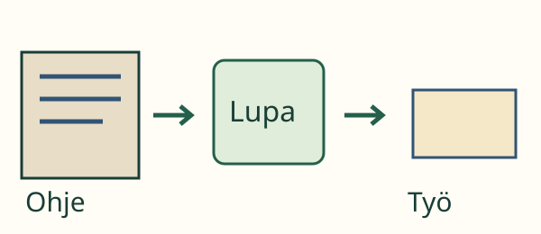
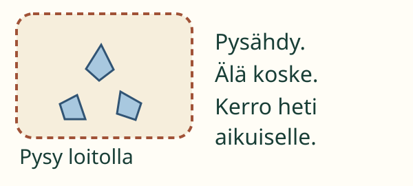

Aava haluaa tutkia heti. Aikuinen sanoo: ”Odota, kerron ensin ohjeen.” Miksi kannattaa odottaa?
Aava haluaa tutkia heti. Aikuinen sanoo: ”Odota, kerron ensin ohjeen.” Miksi kannattaa odottaa?
Aava haluaa tutkia heti. Aikuinen sanoo: ”Odota, kerron ensin ohjeen.” Miksi kannattaa odottaa?
Tavoitteesi: Harjoittelet toimimaan annetun ohjeen mukaan. Jos et ymmärrä, kysyt aikuiselta.
Tutki aikuisen kanssa tuttua paperia pöydällä. Kuuntele tai lue koko ohje ennen kuin aloitat. Aikuinen antaa luvan ja näyttää, mitä tehdään.

Aava osaa jo käyttää suurennuslasia. Hän odottaa silti ohjeen loppuun ja luvan aloittaa. Tässä työssä paperi pidetään pöydällä. Osaaminen ei kerro tämän työn kaikkia ohjeita.

Kuvan purkki meni rikki. Aava pysähtyy. Hän ei koske sirpaleisiin. Hän pysyy loitolla ja kertoo heti aikuiselle. Aikuinen siivoaa sirpaleet. Avuksi ei tarvitse mennä koskemaan.
Mieti: Entä jos ohjeesta jäi yksi kohta epäselväksi?
Odota ja kysy aikuiselta. Älä arvaa työn vaihetta.
Harjoittelemme korteilla. Oikeaan työhön luvan antaa oma aikuinen.
Katso ensin, mitä ohje sanoo ennen työtä. Etsi ohjeesta lupaa koskeva kohta. Mitä tehdään vasta sen jälkeen?
Työn aikana löytyy tuntematon pullo. Jätä se rauhaan ja kysy aikuiselta. Älä avaa, haista tai maista sen sisältöä.
Luokat 1–2, operational-rooli. Anna oikea, lyhyt ohje vaarattomaan paperin tarkasteluun. Näytä työalue. Varmista ymmärrettävyys ja valvo työ. Lapsi voi näyttää toiminnan tai osoittaa vaihetta; puheen vahvistusta ei vaadita. Käytä vain ehjiä, ikään sopivia välineitä. Suojautuminen valitaan tehtävän omien ohjeiden mukaan. Tässä ei tehdä roiskuvia, kuumia tai sähköisiä kokeita eikä käytetä lasipurkkeja.
Sirpaleet ovat vain kuvatilanne. Älä järjestä oikeaa rikkoutumista. Korteista koottu polku harjoittaa ohjeen tulkintaa. Se ei todenna fyysistä ohjeen noudattamista, turvallisuutta tai valmiutta välineiden itsenäiseen käyttöön. Harjoitus ei avaa mitään turvallisuusporttia. Vastauksia ei tallenneta.
Lähtökysymys: Mitä teet ennen aloittamista, jos et ymmärrä ohjetta?
Odotan ja pyydän aikuista selittämään.